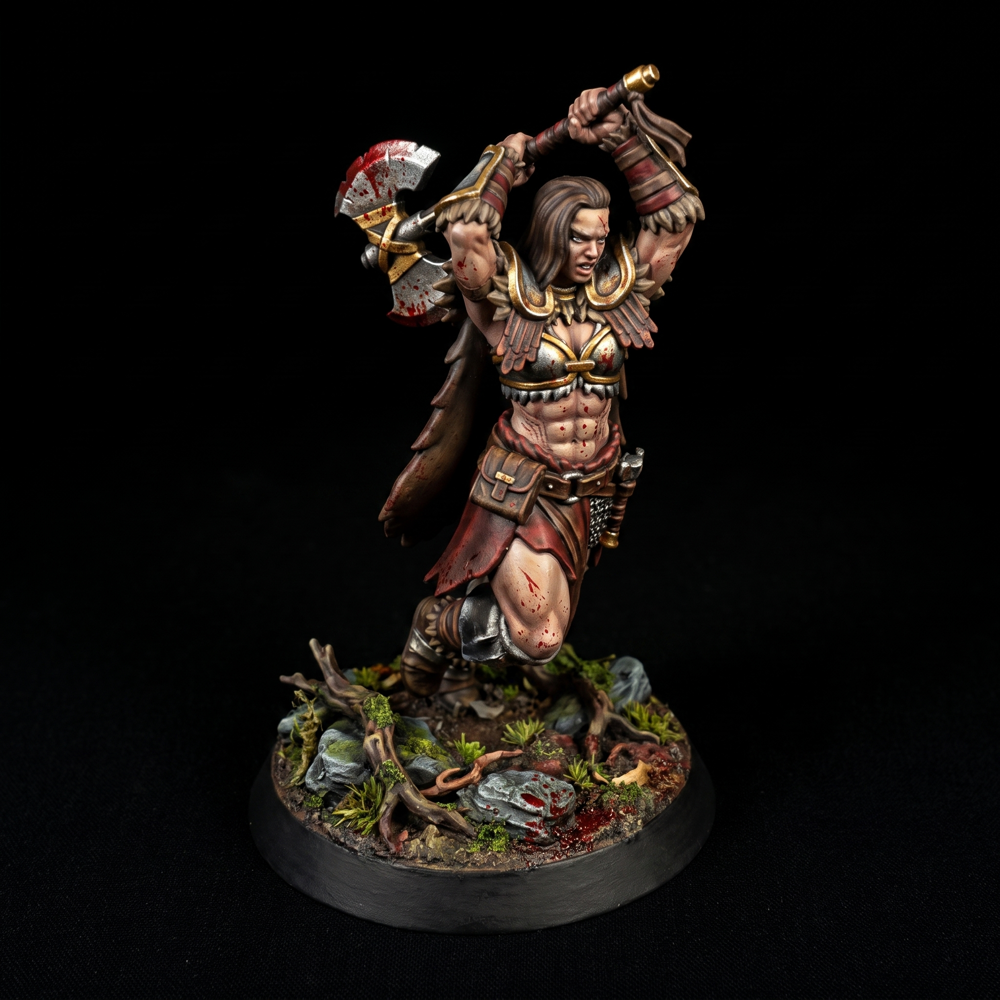
Zenithal Priming Guide for 3D Printed Miniatures
August 01, 2026
Prime your 3D printed miniatures in matte black spray. Let the base coat dry completely. Hold a white spray primer forty-five degrees above…
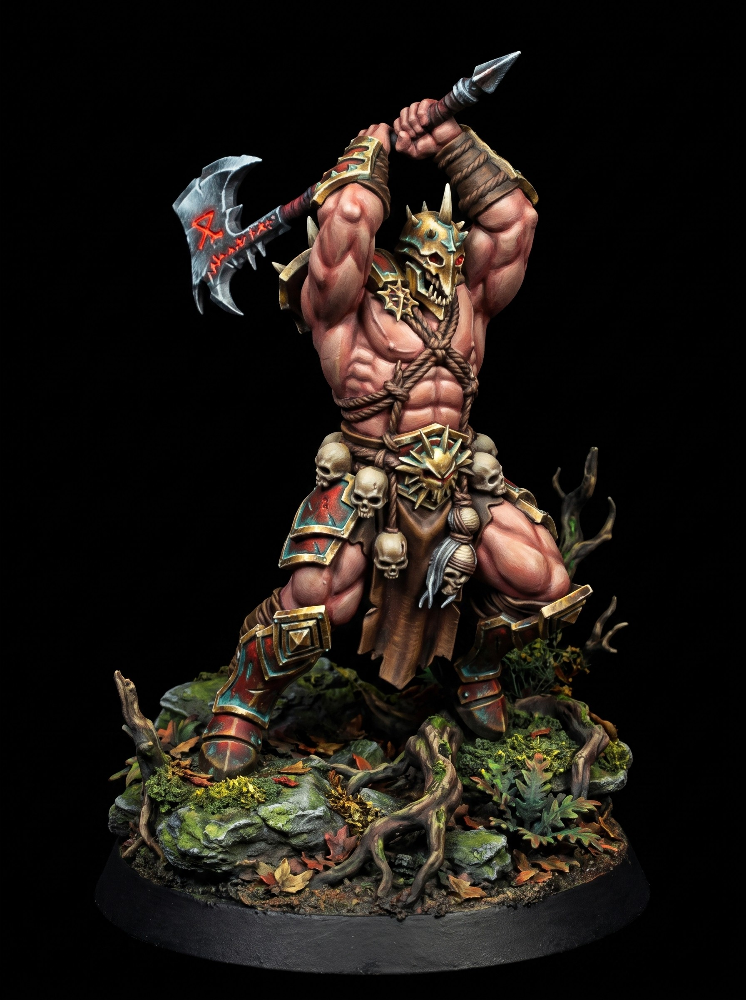
Grimdark Monster Boss Miniature 3D Print
July 31, 2026
A giant steps through the broken archway. Heavy iron plates bind its bloated, scarred flesh. Two massive horns curve outward from a spiked…
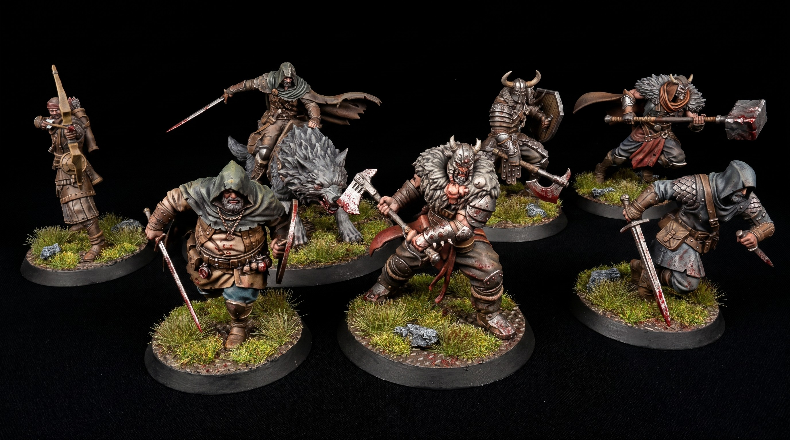
How to Speed Paint Grimdark 3D Printed Miniatures
July 30, 2026
Start with a matte black primer. Drybrush the entire model heavily with a neutral gray. Finish with a light white drybrush strictly from…
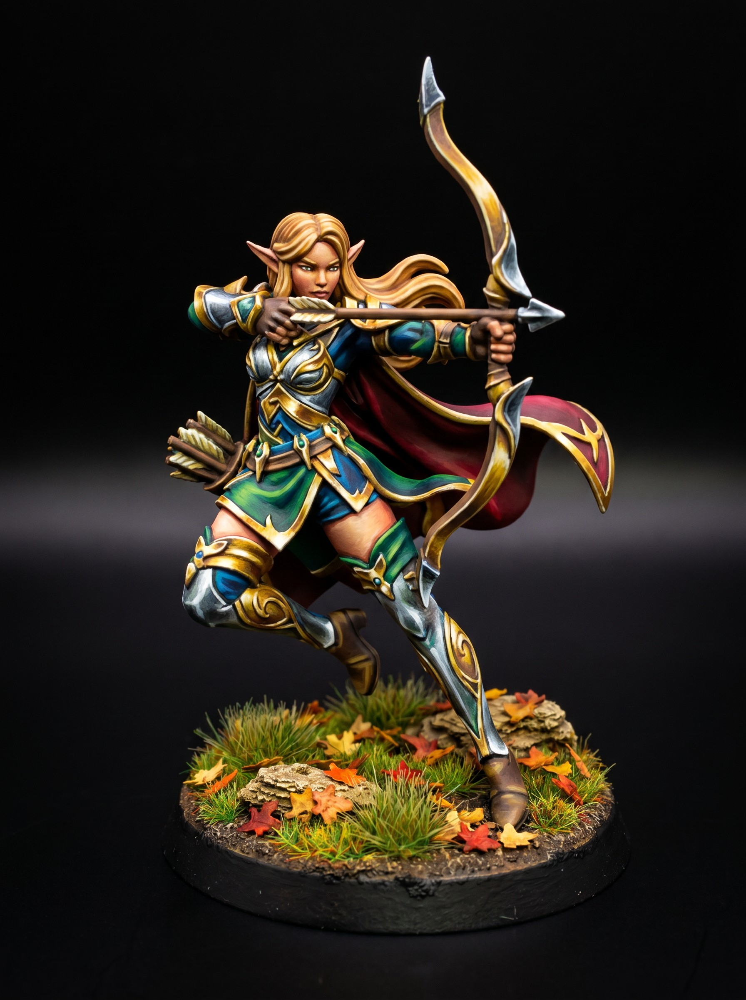
Dark Fantasy Plague Inquisitor Miniature STL
July 28, 2026
The smoke parts behind the fiend. A silent inquisitor steps into the embers. Layered plate encases its slender frame. A brass bird mask…
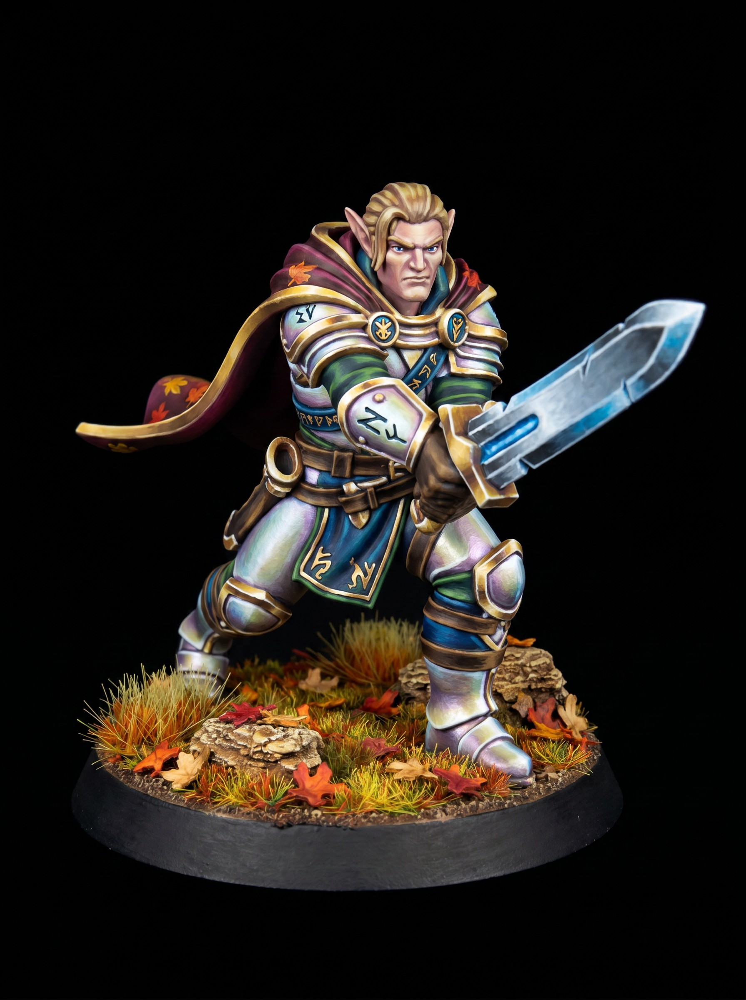
Dread Fiend Iron Wastes Fantasy Miniature STL
July 27, 2026
Stone shatters. A behemoth of warped bone and jagged iron surges from the pit. Smoke pours from its split breastplate. Horns curl around a…
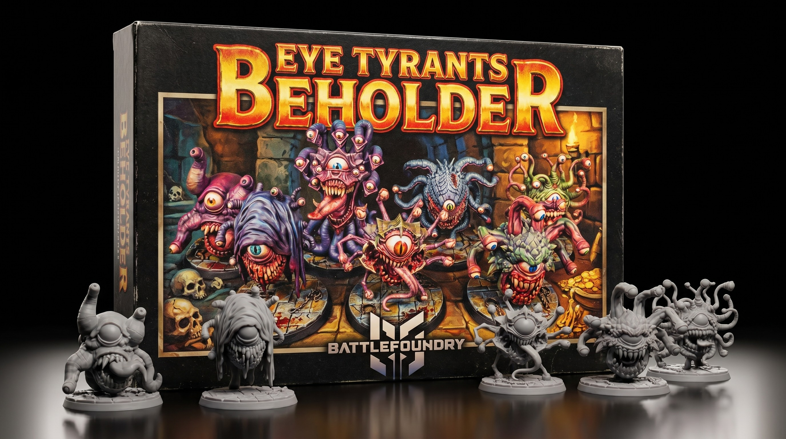
Painting High Contrast Metallic Armor on Minis
July 26, 2026
Basecoat your 3D printed miniatures with matte black spray primer. Black hides missed spots in tight recesses. Spray a bright white acrylic…

How to Paint Metal Armor on 3D Printed Miniatures
July 26, 2026
Start with a solid black primer. A dark base hides microscopic layer lines on 3D printed miniatures. Apply a heavy steel metallic basecoat…
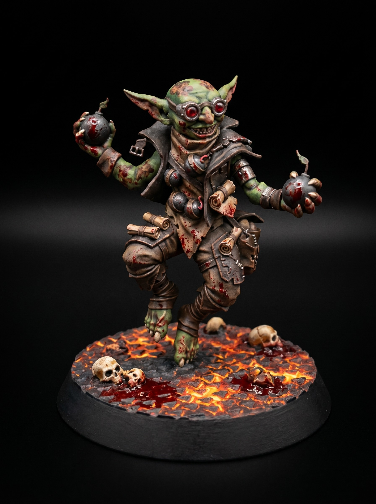
Grave Knight Heavy Infantry Mini
July 25, 2026
The Grave Knights do not bleed. They do not sleep. King Vane entombed his entire vanguard in sealed iron plates to hold the pass. Three…
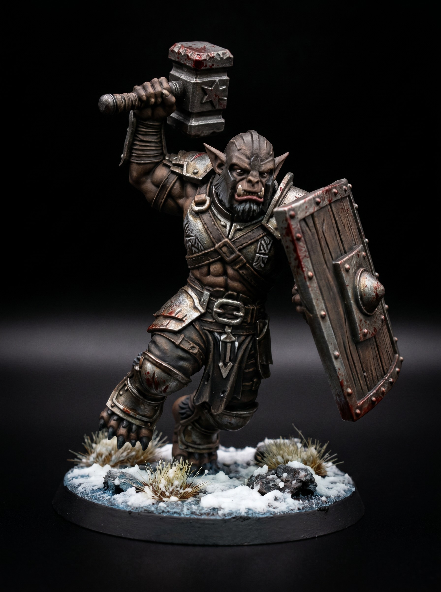
How to paint metallic armor on 3D printed miniatures
July 25, 2026
Layer lines ruin good paint jobs. Start your 3D printed miniatures with a heavy matte black primer. Spray a white zenithal coat from a high…
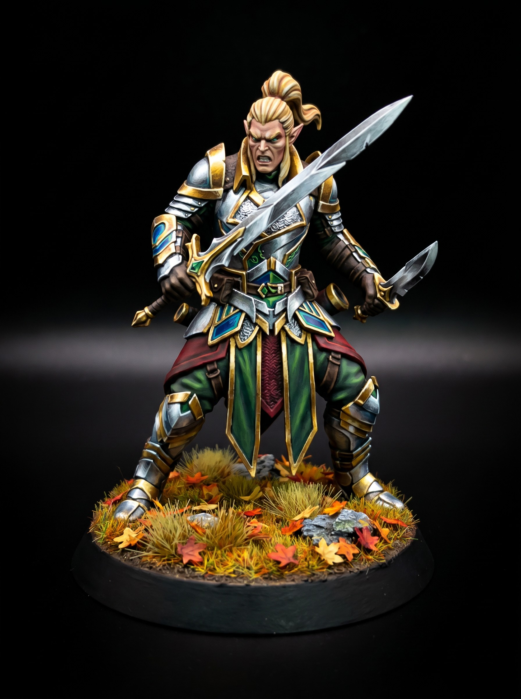
How to Paint Grimdark Armor on 3D Printed Miniatures
July 25, 2026
Clean your 3D printed miniatures before applying primer. Wash away all excess resin. Cure the resin completely under UV light. Apply a coat…
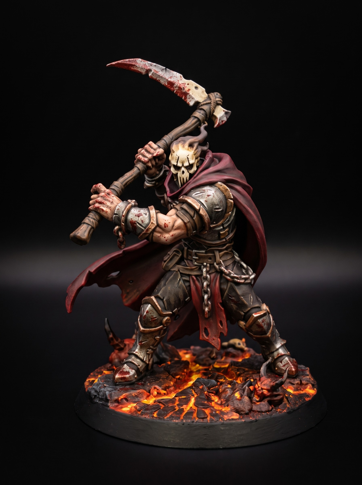
Ironclad Grave Knight Undead Mini
July 24, 2026
The Ironclad Revenants once guarded the High Spires of Oakhaven. Their armor was forged from meteoric iron. They fought until the siege of…
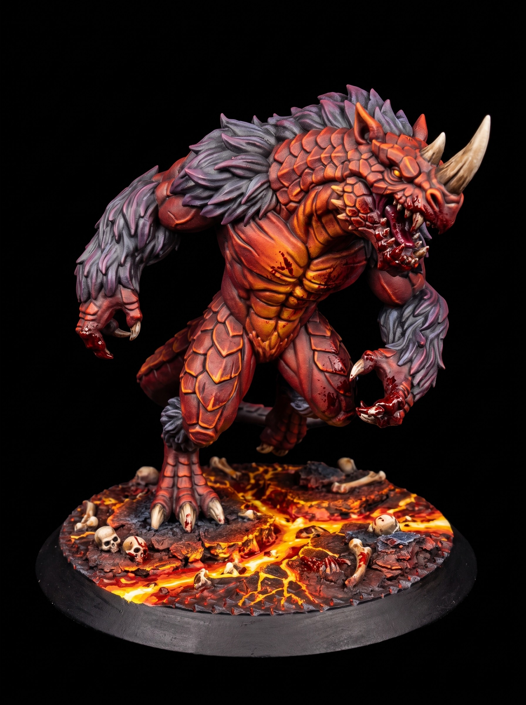
Dark Fantasy Death Knight Free STL Chapter 1
July 24, 2026
The ash fell thick over the Iron Wastes. Varek did not slow his pace. His plate armor bore the dust of three fallen kingdoms. He pulled his…
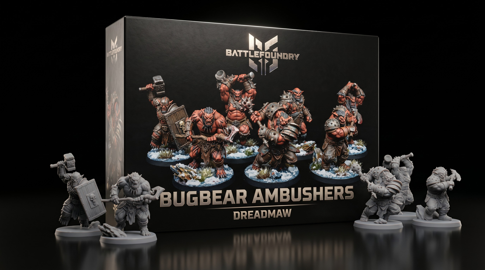
Unleash the Undead Warlord on Your Table!
July 24, 2026
Meet the Undead Warlord, fresh off the digital sculpting bench and ready to haunt your table. Whether you need a terrifying final boss for…
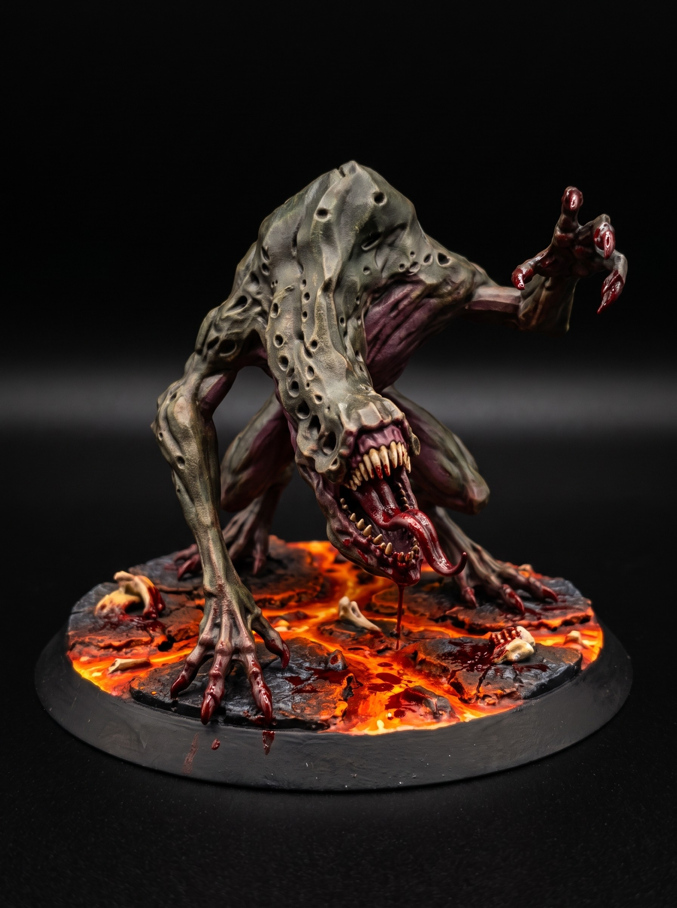
Conquer the Crypt with the Skeletal Warlord
July 24, 2026
Hey fellow painters! Today we are diving into our latest fantasy release on BattleFoundry, the Skeletal Crypt Lord. Imagine your D&D party…
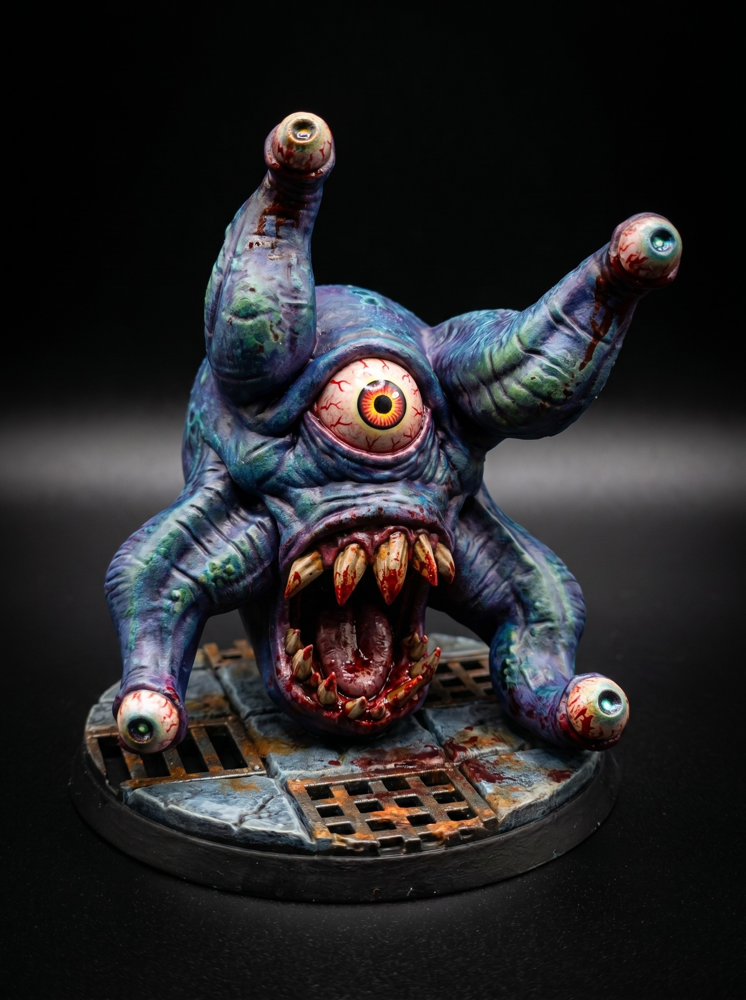
A Classic Undead Captain for Your Next Dungeon Crawl
July 24, 2026
Imagine your party rounding a corner in a dusty tomb, expecting mindless skeletons, only to be confronted by an armored Skeletal Captain…